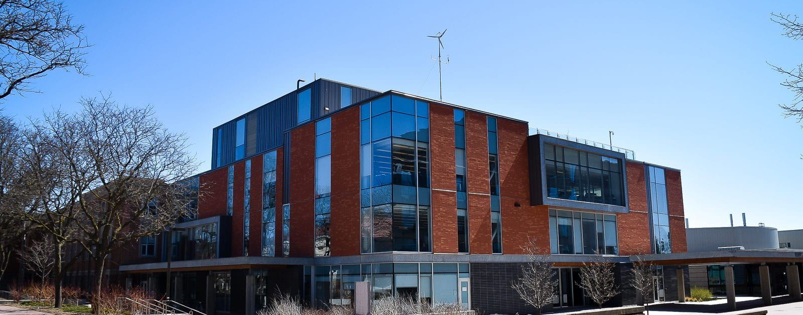
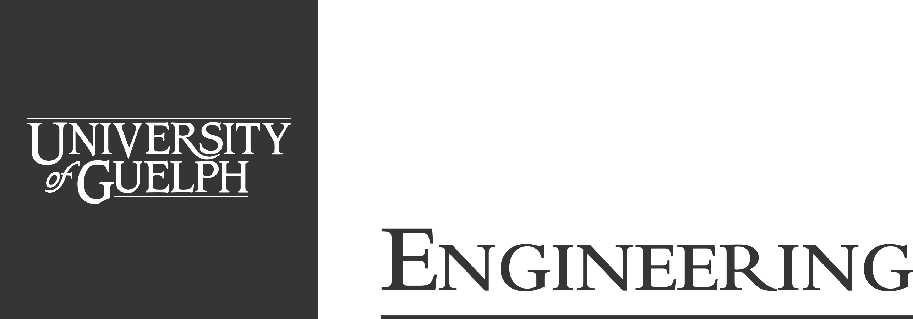

Summer 2024 - City of Guelph
Ethan Wang - wange@uoguelph.ca
Welcome to my report about my work term as a Database Developer at the University of Guelph. In this role, I had the opportunity to collaborate with an amazing team and tackle a wide range of diverse challenges. Throughout the term, I honed my skills in database management, problem-solving, and technical communication, all of which contributed to the successful completion of various projects. This report will detail my experiences, the projects I worked on, and the key takeaways from my time in this role.
About the Employer
The University of Guelph, located in Guelph, Ontario, Canada, was established in 1964 through the merger of the Ontario Agricultural College, the Ontario Veterinary College, and the Macdonald Institute. The university has since grown into a comprehensive institution offering a wide range of programs across various disciplines. It is recognized for its commitment to research, innovation, and community engagement and its motto to improve life.
I worked in the Thornbrough Building's Robotics Lab, where I had the privilege of working under Dr. Hussein Abdullah and an amazing group of peers. Together, we focused on a variety of interesting and innovative projects, contributing to the cutting-edge research and development within the lab.
My Role
In my role as a Database Developer at the University of Guelph, I worked on the development and testing of a database alongside a graphical user interface to support a Virtual Reality Mirror Therapy (VMT) system.
This involved designing efficient database structures, ensuring data integrity, and integrating the database with the user interface to create a seamless experience. I collaborated closely with the development team to troubleshoot issues, optimize performance, and contribute to the overall success of the VMT project.
Goals
-
Teamwork - To Better Collaborate and Contribute Effectively in a Team Environment.
I'm proud to have successfully achieved my goal of working smoothly with colleagues from diverse backgrounds. By focusing on translating complex technical ideas into clear, accessible language and actively seeking feedback, I was able to build stronger connections and ensure we were all on the same page. The positive feedback I've received from my colleagues means a lot to me, and it's rewarding to see our collaborative projects thrive with fewer misunderstandings and smoother communication overall.
-
Technical - Improve my Depth & Breadth of Understanding for C# and Unity.
I'm really proud of how much I've grown in my understanding of C# and Unity. Diving deep into these technical concepts has given me the confidence to apply them effectively in my projects, especially in app and game development. I've noticed a big improvement in my ability to work with C# and Unity, and it's exciting to see how I can now use these tools to create high-quality, functional applications.
-
Problem Solving - Understanding of Software Development and its Processes.
I successfully achieved my goal of gaining a better understanding of software development and its processes. By consistently documenting my code and preparing weekly progress reports, I was able to enhance the clarity and accessibility of my work. This led to increased efficiency in project execution and significantly reduced misunderstandings or delays. The positive feedback from my colleagues on the ease of understanding my code through its documentation is a clear indicator of my success in this goal.
Achievements
Developed and Integrated a Database: Designed and implemented a robust database that seamlessly integrated with the Virtual Reality Mirror Therapy (VMT) system, enhancing the system's overall functionality and performance.
Improved User Interface for VMT System: Collaborated on the development of a user-friendly graphical interface, ensuring a smooth and intuitive experience for users interacting with the VMT system.
Enhanced Data Integrity and System Reliability: Conducted thorough testing and optimization of the database, leading to improved data integrity and increased reliability of the VMT system, contributing to the project's overall success.
Conclusion
In conclusion, my co-op experience as a Database Developer at the University of Guelph provided me with valuable hands-on experience in database development, user interface integration, and collaborative teamwork. Working on the Virtual Reality Mirror Therapy system allowed me to apply my technical skills to a meaningful project, while also expanding my understanding of the software development process. This experience has not only enhanced my technical abilities but also strengthened my problem-solving and communication skills, which I will carry forward in my future endeavors.
Acknowledgments
I would like to express my sincere gratitude to Dr. Hussein Abdullah for his invaluable insights on the VMT system and for consistently challenging me to improve and enhance the project. His guidance and encouragement played a crucial role in my growth throughout this experience.
I would also like to extend my heartfelt thanks to Zinah, Zeyad, and the rest of the research teams in the robotics lab for their guidance, support, and for making my co-op term such an enjoyable and enriching experience.